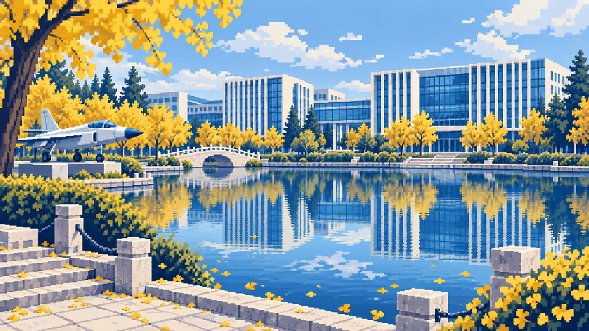
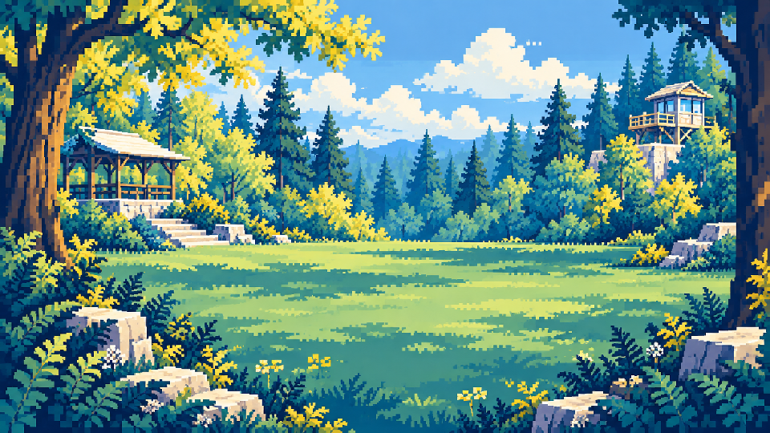
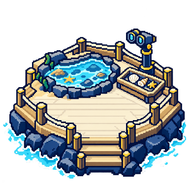

<!doctype html><html lang="zh-CN"><meta charset="utf-8"><title>首轮素材真实尺寸对照</title><style>body{background:#fbf6e8;color:#132a49;font:18px sans-serif;margin:24px}section{width:1040px;padding:24px;border:3px solid #132a49;margin:20px}img{image-rendering:pixelated}.scene{display:block;width:960px}.compare{display:flex;align-items:center;gap:24px}.node{width:220px;height:220px;object-fit:contain;background:repeating-conic-gradient(#10274c 0 25%,#fbf6e8 0 50%) 0/32px 32px}</style><section id="sky"><h2>sky · 场景960px / 关卡220px，与原锚点并排</h2><div class="compare"><figure><figcaption>原关卡锚点220px</figcaption></figure><figure><figcaption>新关卡220px / 真实alpha</figcaption></figure></div></section><section id="forest"><h2>forest · 场景960px / 关卡220px，与原锚点并排</h2><div class="compare"><figure><figcaption>原关卡锚点220px</figcaption></figure><figure><figcaption>新关卡220px / 真实alpha</figcaption></figure></div></section><section id="beach"><h2>beach · 场景960px / 关卡220px，与原锚点并排</h2><div class="compare"><figure><figcaption>原关卡锚点220px</figcaption></figure><figure><figcaption>新关卡220px / 真实alpha</figcaption></figure></div></section>